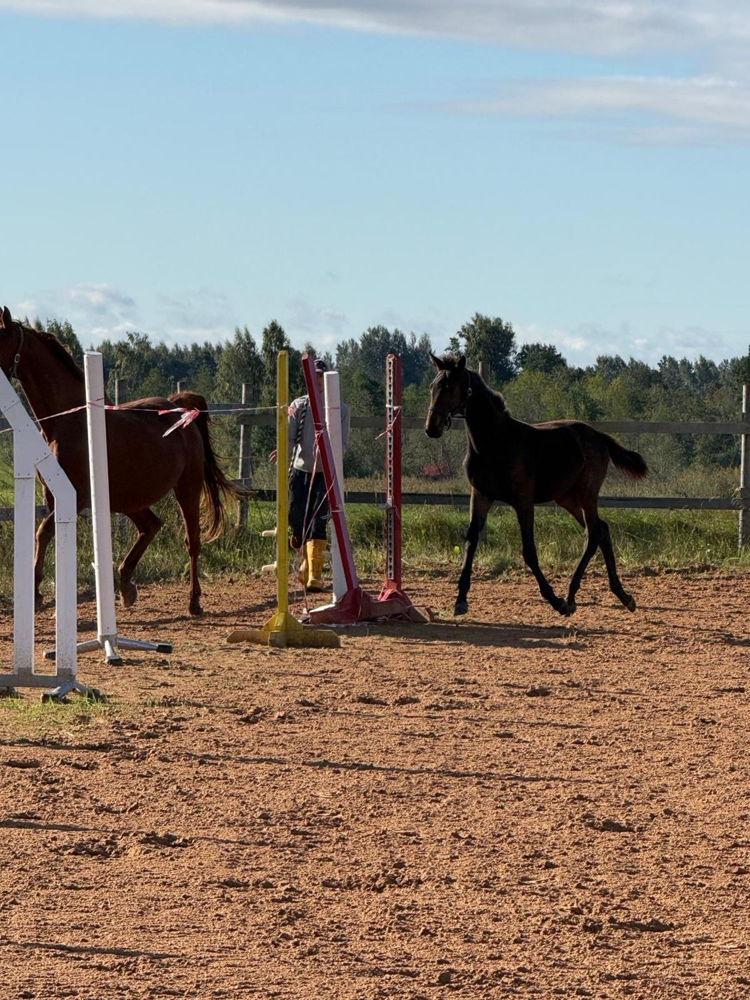
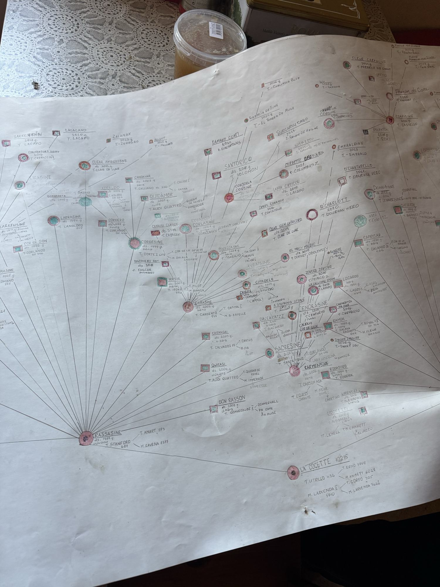
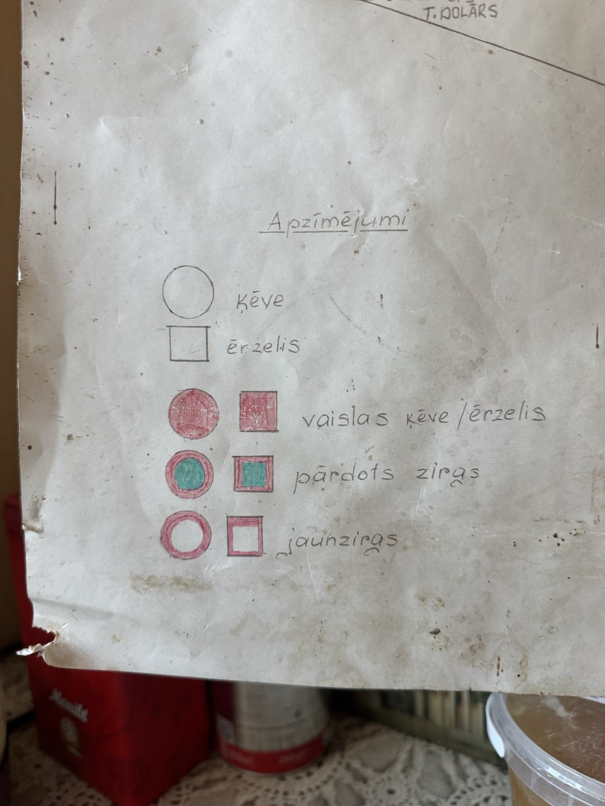

Chloé ciltskoks

Divas ciltsmātes, abas ievestas no Zviedrijas, un 176 pēcnācēji, kas no tām izauguši četrdesmit gados. Chloé stāv abu līniju krustpunktā.
- Vārds
- Chloé Classic Spin ZBZ
- Reģ. nr.
- LV001900006225
- Dzimusi
- 17.03.2026., Birzēs
- Krāsa
- Tumši bēra
- Šķirne
- Latvijas siltasinis
Ciltsraksti
četras paaudzesCiltsmāšu koki
Bildes un video
Birzēs, septembrīPlakāts pret datubāzi
Staļļa sienā karājas divi ar roku zīmēti koki. Tie rāda to, kā reģistrā nav — kurš zirgs pārdots un kurš palicis saimniecībā — bet vairākās vietās atšķiras no LWHORSE. Kur ir pretruna, pareizs ir reģistrs.
| Zirgs | Plakātā | Datubāzē |
|---|---|---|
| Winderoza | Windermare meita | Windstream meita — Windermare mazmeita |
| Winderona | L 4850 | VCG L4830 |
| Charlie Spin ZBZ | gads nesalasāms, divi ieraksti | dzimis 16.03.2025 |
| Wind`s Lobelia Spin | Wind Dale's grupā | Camelia meita, dz. 2017 |
| Qwizz / Querides | Qwizz, tēvs Querides | Qvizz, tēvs Kuerids |
Camelia sešas kumeles. Chloé ir sestā: Lobelia (2017), Lakkarakki (2019), Leticia (2020), Ancelota (2023), Charlie (2025), Chloé (2026).
Zīmētais koks
tas, kā datubāzē navAudzētavas sienā karājas divi ar roku zīmēti plakāti - viens katrai ciltsmātei. Reģistrā ir radniecība, bet ne tas, kas ar zirgu noticis tālāk. Plakāts to pasaka ar krāsu: pilns aplis vai kvadrāts nozīmē, ka zirgs palicis saimniecībā vaislā; zaļš vidus - ka pārdots; tukša kontūra - ka vēl jaunzirgs. Chloé tur ir tukša kontūra augšējā labajā stūrī.
Plakāts vietām arī iet dziļāk par reģistra rindu, pierakstot tēva tēvu un māti blakus vārdam - piemēram T. Irasir < Iroko / Rassasine. Tāpēc glabājam abus.

{kind=link}

{kind=link}
